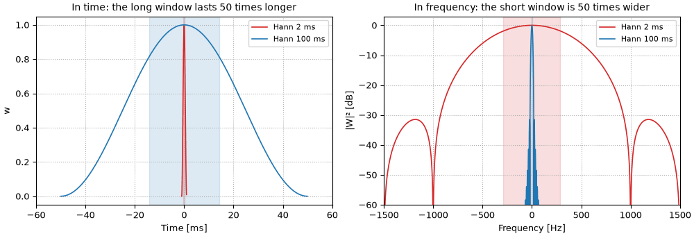

Short and long windows
Two Hann windows fifty times apart in length, drawn to exaggerate the tradeoff: 2 ms and 100 ms. Left, the windows in time; right, their power spectra. The short window is over in a flash and smears every frequency across about 750 Hz; the long one lasts a tenth of a second and is only 15 Hz wide. The shaded bands are \pm\sigma_t and \pm\sigma_f.

Code
fig, (ax_t, ax_f) = plt.subplots(1, 2, figsize=(10, 3.4), layout="constrained")
for frame, color in ((short, "tab:red"), (long, "tab:blue")):
w = frame.window_samples(fs)
sd_t, sd_f = spread(w, fs)
t = (np.arange(len(w)) - len(w) / 2) / fs
label = f"Hann {1e3 * frame.win_dur:.0f} ms"
ax_t.plot(1e3 * t, w, color=color, lw=1.2, label=label)
ax_t.axvspan(-1e3 * sd_t, 1e3 * sd_t, color=color, alpha=0.15)
W2 = np.abs(np.fft.fftshift(np.fft.fft(w, 2**17))) ** 2
f = np.fft.fftshift(np.fft.fftfreq(2**17, 1 / fs))
ax_f.plot(f, 10 * np.log10(np.maximum(W2 / W2.max(), 1e-12)), color=color, lw=1.2, label=label)
ax_f.axvspan(-sd_f, sd_f, color=color, alpha=0.15)
ax_t.set(
xlim=(-60, 60), xlabel="Time [ms]", ylabel="w", title="In time: the long window lasts 50 times longer"
)
ax_f.set(
xlim=(-1500, 1500),
ylim=(-60, 3),
xlabel="Frequency [Hz]",
ylabel="|W|² [dB]",
title="In frequency: the short window is 50 times wider",
)
for ax in (ax_t, ax_f):
ax.legend(loc="upper right", fontsize=8)
ax.grid(ls=":")